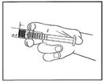
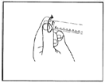
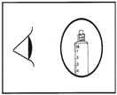
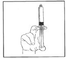

RÉSUMÉ DES CARACTÉRISTIQUES DU PRODUIT
ANSM - Mis à jour le : 03/10/2014
ATROPINE SULFATE AGUETTANT 0,5 mg/5 mL, solution injectable en seringue préremplie
2. COMPOSITION QUALITATIVE ET QUANTITATIVE
Une seringue de 5 mL contient 0,5 mg de sulfate d’atropine.
Un mL de solution injectable contient 0,1 mg de sulfate d’atropine.
Excipient(s) à effet notoire : sodium.
Un mL de solution injectable contient 3,5 mg soit 0,154 mmol de sodium.
Une seringue de 5 mL contient 17,7 mg soit 0,770 mmol de sodium.
Pour la liste complète des excipients, voir rubrique 6.1.
Solution injectable en seringue préremplie.
Solution transparente et incolore.
pH 3,2 – 4,0.
4.1. Indications thérapeutiques
· Traitement préopératoire : prévention des réactions vagales (arythmie, bradycardie) associées à l’intubation trachéale et à la manipulation chirurgicale.
· Réanimation cardio-pulmonaire : traitement des bradycardies sinusales et des blocs auriculoventriculaires.
· En association avec la néostigmine : limitation des effets muscariniques de la néostigmine utilisée après la chirurgie pour la neutralisation des curares non dépolarisants.
· Antidote spécifique en cas de surdosage d’anticholinesterasiques, d’intoxications aiguës par les organophosphorés (insecticides, gaz neurotoxiques employés comme arme chimique, carbamates) ou les champignons muscariniques.
4.2. Posologie et mode d'administration
Atropine sulfate Aguettant 0,5 mg/5 mL, solution injectable en seringue préremplie doit être administrée sous surveillance médicale.
Posologie :
Traitement préopératoire (I.V. et exceptionnellement I.M.) :
· Adultes : 0,3 à 0,6 mg I.V. juste avant l’induction de l’anesthésie ou 0,3 à 0,6 mg I.M., 30 à 60 minutes avant l’induction de l’anesthésie.
· Enfants de moins de 12 ans : 10-20 µg/kg en I.M., 30 à 60 minutes avant l’induction de l’anesthésie.
Réanimation cardio-pulmonaire :
· Adultes :
o Bradycardie sinusale : 0,5 mg I.V., toutes les 2 à 5 minutes jusqu’à obtention de la fréquence cardiaque désirée.
o Bloc auriculoventriculaire : 0,5 mg I.V., toutes les 3 à 5 minutes (maximum 3 mg).
· Enfants : 20 µg/kg en I.V. en dose unique (dose minimale 100 µg, dose maximale 600 µg).
En association avec la néostigmine pour limiter ses effets muscariniques :
· Adultes : 0,6 à 1,2 mg I.V.
· Enfants : 20 µg/kg en I.V.
Antidote des organophosphorés (pesticides, gaz neurotoxiques) :
· Adultes : 2 mg I.V. ou I.M., toutes les 5 à 10 minutes.
Répéter la dose jusqu’à la disparition des signes et symptômes muscariniques ou l’apparition des signes d’atropinisation (tachycardie, mydriase).
Antidote des inhibiteurs de la cholinestérase et en cas d’intoxication par des champignons :
· Adultes: 0,6 à 1 mg I.V. ou I.M., toutes les 2 heures.
Répéter la dose jusqu’à la disparition des signes et symptômes muscariniques ou l’apparition de signes d’atropinisation (tachycardie, mydriase).
Mode d’administration :
L’atropine est administrée par injection intraveineuse ou injection intramusculaire.
· Hypersensibilité à la substance active ou à l’un des excipients,
· Glaucome à angle fermé,
· Risque de rétention urinaire dû à une maladie de la prostate ou de l’urètre,
· Myasthénie gravis sauf si administré en association avec un anticholinesterasique,
· Allaitement (voir rubrique 4.6),
· Achalasie de l’œsophage.
4.4. Mises en garde spéciales et précautions d'emploi
Utiliser avec prudence en cas de :
· Hypertrophie prostatique ;
· Insuffisance rénale ou hépatique ;
· Insuffisance cardiaque, arythmie, hyperthyroïdie ;
· Broncho-pneumopathie chronique, car une réduction des sécrétions bronchiques peut donner lieu à la formation de bouchons muqueux ;
· Iléus paralytique, atonie intestinale chez les personnes âgées, mégacolon toxique ;
· Sténose du pylore ;
· Fièvre, ou lorsque la température ambiante est élevée ;
· Chez les personnes âgées, plus susceptibles de présenter des effets indésirables.
Ce médicament contient du sodium. La teneur en sodium est inférieure à 1 mmol par seringue, c’est-à-dire sans « sodium ».
4.5. Interactions avec d'autres médicaments et autres formes d'interactions
Associations à prendre en compte
+ Autres médicaments avec une activité anticholinergique, tels qu’antidépresseurs tricycliques, certains antihistaminiques H1, antiparkinsoniens, disopyramide, méquitazine, phénothiazines, neuroleptiques, antispasmodiques atropiniques, clozapine et quinidine
En raison du risque de potentialisation des effets indésirables de l’atropine (rétention urinaire, constipation, sécheresse buccale).
Des études chez l’animal ont révélé un effet tératogène de l’atropine chez une seule espèce à des doses très élevées.
Les données provenant d’un nombre limité de grossesses exposées n’ont indiqué aucun effet indésirable de l’atropine sur la grossesse ou sur la santé du fœtus/nouveau-né.
L’atropine passe la barrière placentaire.
À ce jour, aucune autre donnée épidémiologique n’est disponible.
Il est préférable de ne pas utiliser l’atropine pendant la grossesse sauf en cas de nécessité absolue.
L’atropine est excrétée dans le lait maternel et peut provoquer une toxicité neurologique chez le nourrisson. En outre, l’atropine inhibe la lactation.
Par conséquent, l’allaitement est contre-indiqué en cas d’utilisation d’atropine.
Fécondité
Il n’existe aucune donnée préclinique sur la fécondité avec l’atropine, ni aucune donnée épidémiologique.
4.7. Effets sur l'aptitude à conduire des véhicules et à utiliser des machines
Les événements indésirables les plus fréquemment rapportés sont dus à l’action de l’atropine sur les récepteurs muscariniques et à haute dose sur les récepteurs nicotiniques. Ces effets sont liés à la dose et sont généralement réversibles à l’arrêt du traitement.
Affections du système immunitaire :
Anaphylaxie.
Affections du système nerveux :
Nervosité, confusion mentale, en particulier chez les personnes âgées. À des doses plus élevées, hallucinations, agitation, délire.
Affections oculaires :
Dilatation des pupilles accompagnée d’une perte d’accommodation et de photophobie, diminution de la sécrétion lacrymale, augmentation de la pression intraoculaire.
Affections cardiaques :
Tachycardie, palpitations, arythmie.
Affections vasculaires :
Rougeurs.
Affections respiratoires, thoraciques et médiastinales :
Épaississement des sécrétions bronchiques.
Affections gastro-intestinales :
Sécheresse buccale, nausées, vomissements, constipation.
Affections du rein et des voies urinaires :
Rétention urinaire.
Affections de la peau et du tissu sous-cutané :
Sécheresse cutanée.
Troubles généraux :
Soif.
Déclaration des effets indésirables suspectés
La déclaration des effets indésirables suspectés après autorisation du médicament est importante. Elle permet une surveillance continue du rapport bénéfice/risque du médicament. Les professionnels de santé déclarent tout effet indésirable suspecté via le système national de déclaration : Agence nationale de sécurité du médicament et des produits de santé (Ansm) et réseau des Centres Régionaux de Pharmacovigilance - Site internet: www.ansm.sante.fr
Symptômes :
Rougeurs et sécheresse cutanée, dilatation des pupilles, sécheresse de la bouche et de la langue, tachycardie, respiration accélérée, hyperthermie, nausées, vomissements. Les symptômes de la stimulation du SNC incluent une agitation, une confusion, des hallucinations, des réactions paranoïaques et psychotiques, des troubles de la coordination, des délires et parfois des convulsions. En cas de surdosage grave, une dépression du SNC peut survenir accompagnée d’un coma, d’une insuffisance circulatoire et respiratoire et d’un décès.
Traitement :
Le traitement doit être un traitement symptomatique. Les voies respiratoires doivent être maintenues dégagées. Le diazépam peut être administré pour contrôler l’excitation et les convulsions mais le risque de dépression du SNC doit être pris en compte.
5. PROPRIETES PHARMACOLOGIQUES
5.1. Propriétés pharmacodynamiques
Classe pharmacothérapeutique : ALCALOIDES DE LA BELLADONE : AMINES TERTIAIRES
Code ATC : A03BA01
L’atropine est un agent antimuscarinique, un antagoniste compétitif de l’acétylcholine au niveau des terminaisons nerveuses postganglionnaires, affectant par conséquent les récepteurs des glandes exocrines, du muscle lisse, du muscle cardiaque et du système nerveux central.
Les effets périphériques incluent une diminution de la production de la salive, de la transpiration, des sécrétions nasales, lacrymales et gastriques, une diminution de la motilité intestinale et une inhibition de la miction.
L’atropine augmente la fréquence sinusale et la conduction sino-auriculaire et auriculo-ventriculaire. La fréquence cardiaque est généralement augmentée mais avec la possibilité d’une bradycardie initiale.
L’atropine inhibe les sécrétions des voies respiratoires et relâche le muscle lisse bronchique produisant une bronchodilatation.
5.2. Propriétés pharmacocinétiques
Après administration intraveineuse, le pic d’augmentation de la fréquence cardiaque est atteint au bout de 2 à 4 minutes. Le pic des concentrations plasmatiques de l’atropine après administration intramusculaire, est atteint au bout de 30 minutes, bien que les effets maximums sur le cœur, la transpiration et la salivation puissent survenir 1 heure après l’administration intramusculaire.
Distribution
Les taux plasmatiques après une injection intramusculaire et intraveineuse sont comparables à 1 heure. L’atropine est largement distribuée au sein de l’organisme et traverse la barrière hémato-encéphalique et la barrière placentaire.
Elimination
La demi-vie d’élimination est d’environ 2 à 5 heures. Jusqu’à 50 % de la dose est liée aux protéines.
La demi-vie d’élimination est plus que doublée chez les enfants de moins de 2 ans et les sujets âgés, ce qui peut expliquer qu’ils soient plus sensibles à l’atropine, avec un risque accru d’effets indésirables.
Biotransformation
L’atropine est partiellement métabolisée dans le foie et est excrétée dans l’urine sous forme de médicament inchangé et de métabolites. Environ 50 % de la dose est excrétée dans les 4 heures et 90 % dans les 24 heures.
5.3. Données de sécurité préclinique
Il n’y a pas de données précliniques pertinentes pour le prescripteur autres que celles déjà incluses dans les autres rubriques du résumé des caractéristiques du produit.
En l’absence d’études de compatibilité, ce médicament ne doit pas être mélangé avec d’autres médicaments.
6.4. Précautions particulières de conservation
Pas de précautions particulières de conservation.
6.5. Nature et contenu de l'emballage extérieur
5 mL de solution en seringue préremplie (polypropylène) sans aiguille, sous emballage individuel dans un blister transparent disponible en boîtes de 1, 5, 10, 12 ou 20.
Toutes les présentations peuvent ne pas être commercialisées.
6.6. Précautions particulières d’élimination et de manipulation
Mode d’emploi :
Veuillez respecter strictement le protocole pour l’utilisation de la seringue.
La seringue préremplie est destinée à un seul patient uniquement. Jeter la seringue après utilisation. NE PAS REUTILISER.
Le contenu d’un blister non-ouvert et non-endommagé est stérile et ne doit pas être ouvert avant utilisation.
Le produit doit être inspecté à l’œil nu afin de déceler toute particule et décoloration avant administration. Seule une solution transparente et incolore exempte de particules ou de précipités doit être utilisée.
Le produit ne doit pas être utilisé si le système d’inviolabilité de la seringue (le protège embout en plastique) est rompu.
La surface externe de la seringue est stérile jusqu’à l’ouverture du blister.
1) Retirez la seringue préremplie du blister stérile.
|
 |
2) Poussez le piston pour libérer le bouchon. |
|
 |
3) Tournez le protège embout pour casser la fermeture. |
|
 |
4) Vérifiez que la fermeture de la seringue (protège embout en plastique et fermeture sous le protège embout) a été complètement retirée. Dans le cas contraire, replacez le protège embout et tournez à nouveau. |
|

|
5) Expulser l’air en poussant doucement le piston.
|
6) Connecter la seringue sur le dispositif d’accès veineux ou l’aiguille. Poussez le piston pour injecter le volume requis.
Le calibre de l’aiguille approprié pour une utilisation avec la seringue est compris entre 23 et 20 Gauge pour une administration I.V. et entre 23 à 21 Gauge pour une administration I.M.
Tout médicament non utilisé ou déchet doit être éliminé conformément à la réglementation en vigueur.
7. TITULAIRE DE L’AUTORISATION DE MISE SUR LE MARCHE
LABORATOIRE AGUETTANT
1, rue Alexander Fleming
69007 Lyon
8. NUMERO(S) D’AUTORISATION DE MISE SUR LE MARCHE
· 276 656-8 ou 34009 276 656 8 4 : 5 mL en seringue préremplie (polypropylène); boite de 1
· 276 657-4 ou 34009 276 657 4 5 : 5 mL en seringue préremplie (polypropylène); boite de 5
· 276 658-0 ou 34009 276 658 0 6 : 5 mL en seringue préremplie (polypropylène); boite de 10
· 276 659-7 ou 34009 276 659 7 4 : 5 mL en seringue préremplie (polypropylène); boite de 12
· 276 660-5 ou 34009 276 660 5 6 : 5 mL en seringue préremplie (polypropylène); boite de 20
9. DATE DE PREMIERE AUTORISATION/DE RENOUVELLEMENT DE L’AUTORISATION
[à compléter par le titulaire]
10. DATE DE MISE A JOUR DU TEXTE
[à compléter par le titulaire]
Sans objet.
12. INSTRUCTIONS POUR LA PREPARATION DES RADIOPHARMACEUTIQUES
Sans objet.
Liste I.